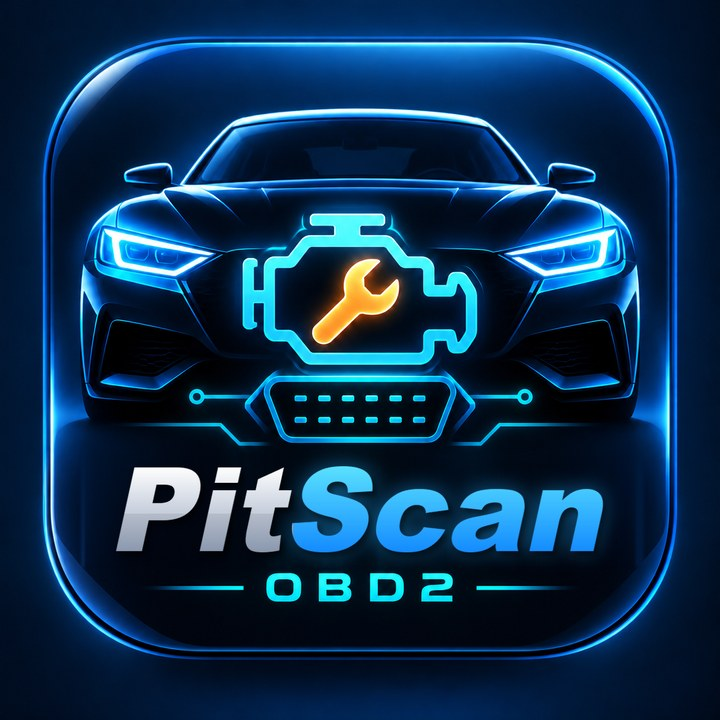
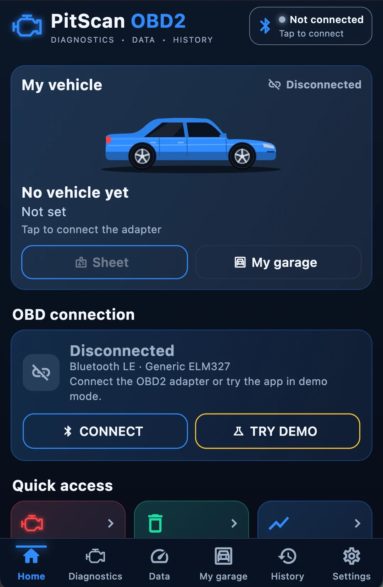
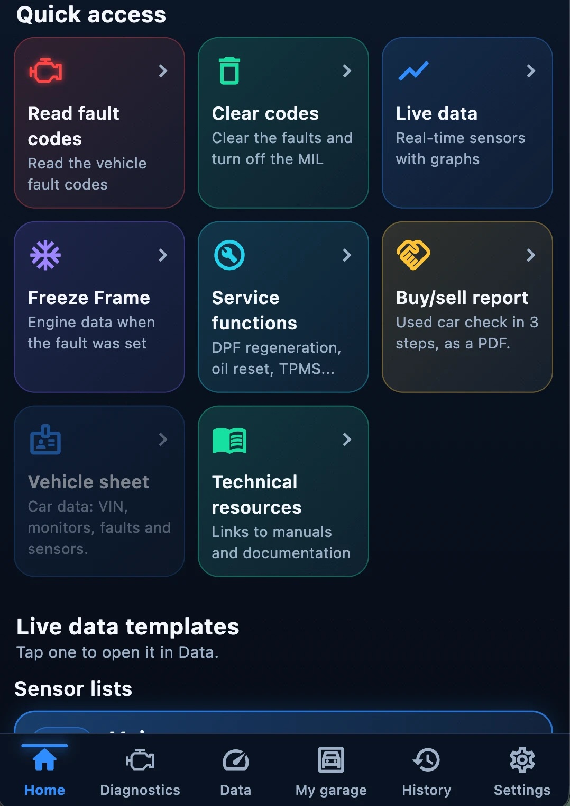
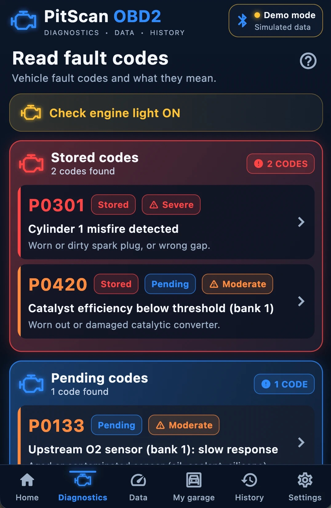
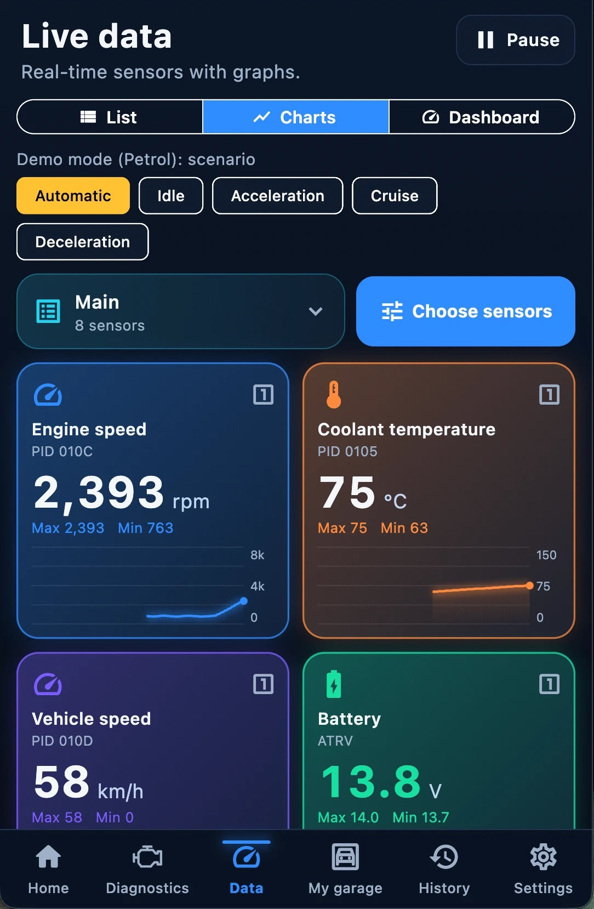

Diagnosis · Datos · Historial
Conecta un adaptador OBD2 ELM327 y lee las averías y los sensores de tu coche desde el móvil. Para el taller y para revisar un coche usado antes de comprarlo.
Próximamenteen Google Play



Lee averías
Códigos guardados, pendientes y permanentes, con su explicación y el freeze frame. Borrado solo cuando tú lo pides, con copia previa.
Sensores en vivo
Revoluciones, temperaturas, turbo y más, en lista, gráfica o en un tablero que puedes personalizar.
Informe de compraventa
Revisa un coche usado paso a paso y genera un informe en PDF con su checklist.
Varios adaptadores
ELM327 por Bluetooth LE, Bluetooth clásico y Wi-Fi. Y un modo demo para probarla sin coche.
Solo lectura
PitScan no cambia la configuración del coche: lee lo que la centralita ya informa por OBD2.
Tus datos, en tu móvil
Sin cuentas ni servidores. Lo que guardas se queda en el teléfono. Política de privacidad.